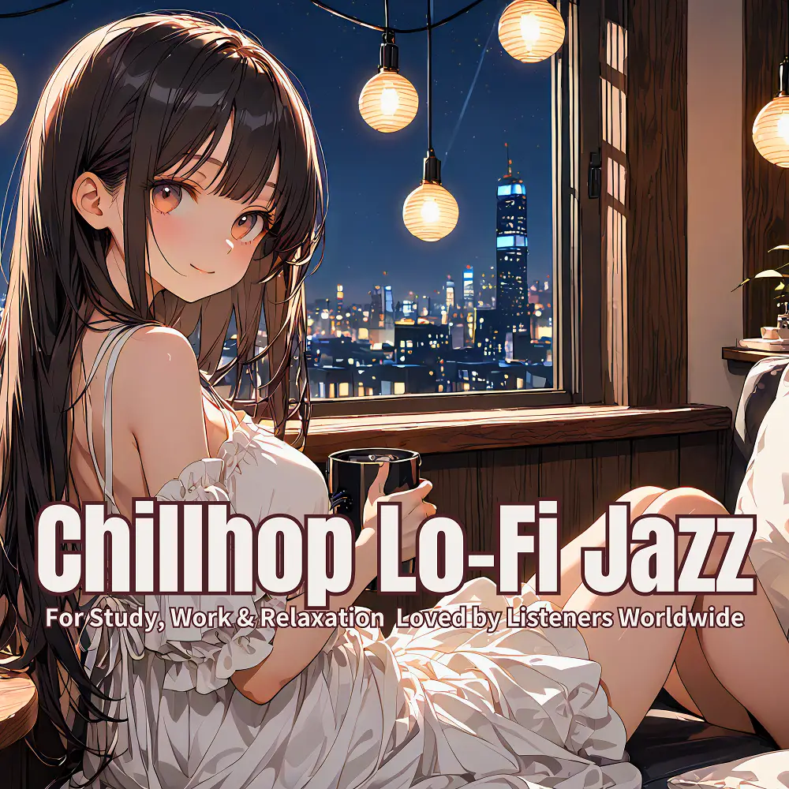

Chillhop · Lo-Fi · Jazz
Chillhop Lo-Fi Jazz: Global Beats for Focus & Calm
Nanashino-chan
Explore Chillhop Lo-Fi Jazz: Global Beats for Focus & Calm by Nanashino-chan: 25 instrumental tracks spanning Chillhop / Lo-Fi / Jazz. Start with Evening Steam / Windowlight Waltz, preview the collection and find your favorites on streaming services.
2025-07-25 · Released · 25 tracks · Instrumental
Preview the album
The jacket stays here until you choose a track. Playback uses YouTube.
YOUTUBE PREVIEW
Choose a track to listen
The jacket stays here until you choose a track. Playback uses YouTube.
If playback is unavailable, open the album or track on the streaming service.
Find this album on streaming services
Links marked “search” open search results. Select the album or track on the service.
Track list 25
- 01Evening Steam
- 02Windowlight Waltz
- 03Softly Spoken
- 04Velvet Sketches
- 05Warm Vinyl Dream
- 06Café in the Rain
- 07Lo-Fi Reverie
- 08Lazy Orbit
- 09Golden Notebook
- 10Breeze on the Balcony
- 11Driftwood Memory
- 12Coffee & Chords
- 13Muted Sunshine
- 14Dusty Groove
- 15Echoes of the Sofa
- 16Late Night Canvas
- 17Calm Interlude
- 18Vinyl Windowpane
- 19Afterglow Flow
- 20Sundown Waltz
- 21Ink & Inspiration
- 22Clouded Mind
- 23Sepia Stillness
- 24Studio Light
- 25Lo-Fi Goodbye
Find a sound for your next post
Copy “Nanashino-chan + track title” and paste it into your social app’s music search. Availability depends on your region and account. Copying the name does not grant usage rights.